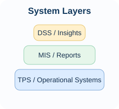

Core Information Systems
Companies use different systems for different jobs, but they all connect back to data, processes, and decisions.

Three common ideas
- Transaction Processing Systems: handle day to day business activity like orders or payroll.
- Management Information Systems: summarize data so managers can track performance.
- Decision Support Systems: help people analyze choices and make better calls.
The image on this page is floated to the right so the text wraps around it. That helps show one of the layout ideas from the positioning chapter.
ERP
Connects core business functions like accounting, inventory, purchasing, and HR.
CRM
Tracks customer interactions and helps companies improve marketing, sales, and service.
BI Tools
Turn operational data into reports, dashboards, and visuals for decision making.
Why layout matters
Website layout changes what people notice first. Good layout helps users find what they need faster and makes the page feel more organized.
On this page, the note in the corner is absolutely positioned inside this box.